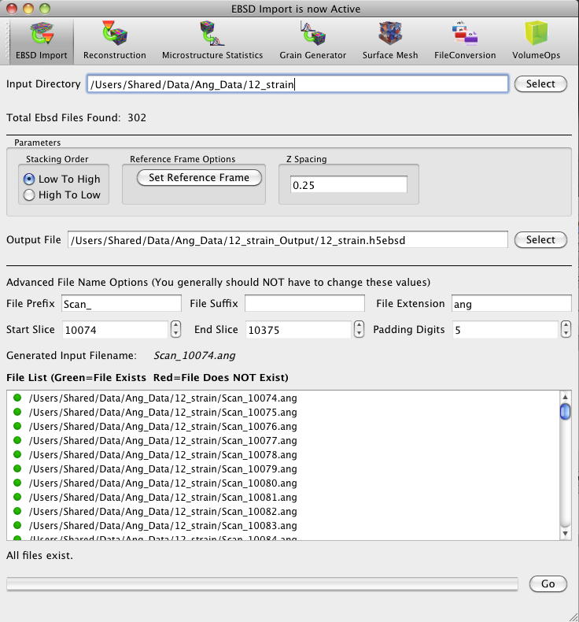
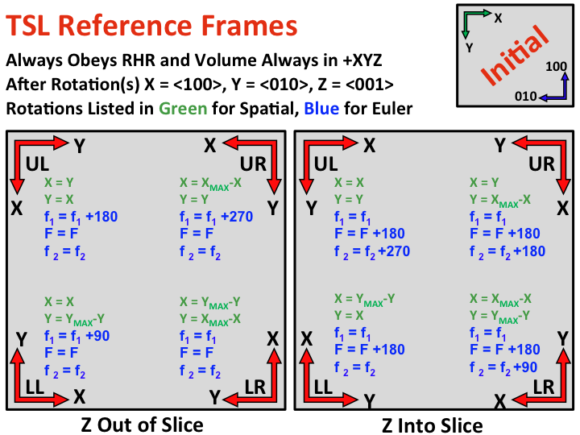
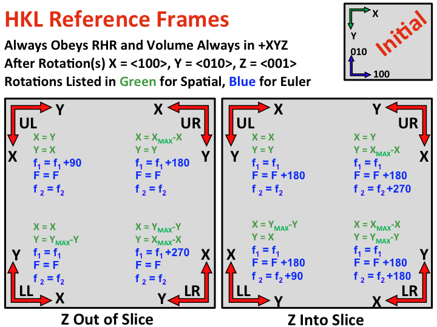

EBSD Data Import

- Input Directory - Directory where the input files are located
- a. Total EBSD Files Found - Code will determine how many .ang or .ctf files are present.
- b. Currently only .ang and .ctf files are supported.
- Parameters
- Stacking Order - This parameter describes how the data was acquired in
relation to how the files were named during the acquisition. For example
if you acquired your data on a FIB type setup with an EBSD acquisition system
and the first set of data was named with a filename of 001.ang and the
last data set that was acquired was named with a filename of 099.ang then
the appropriate "Stacking Order" is "Low to High".
If on the other hand your EBSD/FIB machine collected 100 slices
and the first slice was named 099.ang and the last was named 000.ang then
the appropriate Stacking Order is "High to Low".
- Display Origin - This describes the spacial reference frame origin for
the data set. This should be set for each data set. Use the images below
to select the appropriate reference frame origin for your data.


- Z spacing - This is the spacing between sections
- a. Note that the x and y spacings are automatically read from
the input files.
- b. If the x and y spacing values change, the ones in the first
section are used.
- Output File - Name and location of desired output .h5ebsd file
- File Prefix, Suffix and File Extension - Variables that are combined to generate the list of file names
- a. These values should all be automatically determined, but
should be checked if uncommon prefixes or suffixes are used.
- Start Slice, End Slice and Padding Digits More
variables that are combined to generate the list of file names
- a. Start slice and end slice define the range of data to be
included in the .h5ang file (i.e. you do not have to import the entire
dataset).
- b. Padding digits controls the number of leading zeros that are
present in the filename.
- File List - This area lists all the files that will be included
in the .h5ebsd file based on the inputs chosen.
- The files in the list will have a green dot if they are
present in the directory selected and a red dot if they are not
present. If any items show a red dot the corrections should be made to
the text fields that control how the file names are generated so that
everything file is explicity listed with a green dot.